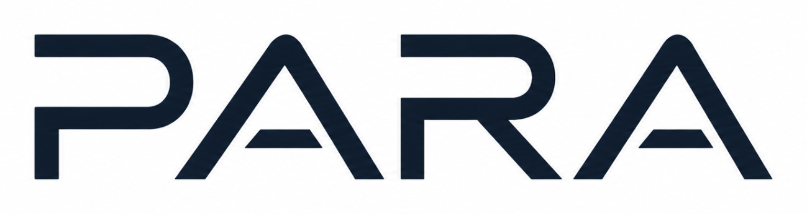

DESKTOP APPLICATION
A pricing analytics and recommendation assistant for organizing product, sales, inventory, and pricing data. It combines a React interface with Python/Flask APIs and a PostgreSQL database, with machine-learning components prepared for future demand forecasting and pricing recommendations.